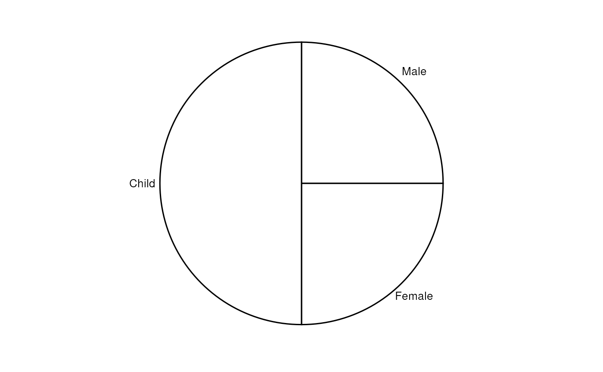
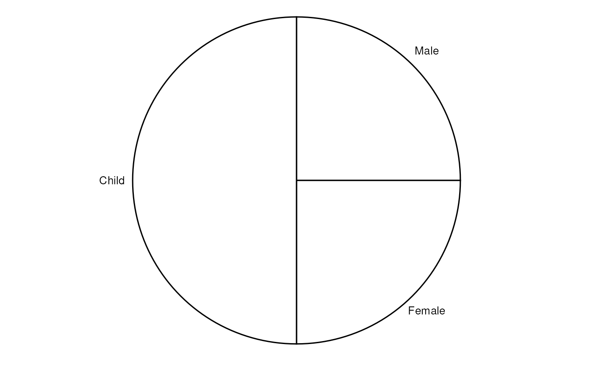
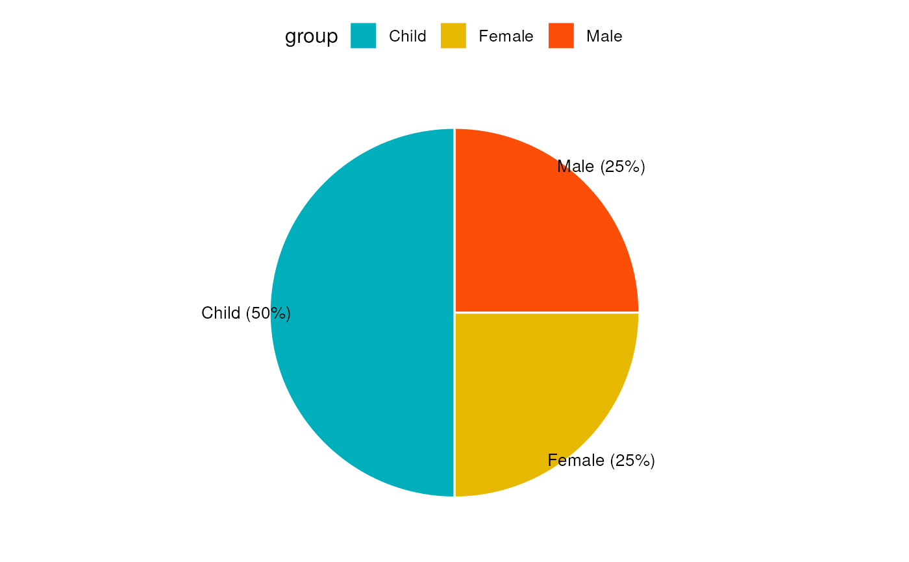

Create a pie chart.
ggpie(
data,
x,
label = x,
lab.pos = c("out", "in"),
lab.adjust = 0,
lab.font = c(4, "plain", "black"),
font.family = "",
color = "black",
fill = "white",
palette = NULL,
size = NULL,
ggtheme = theme_pubr(),
...
)a data frame
variable containing values for drawing.
variable specifying the label of each slice.
character specifying the position for labels. Allowed values are "out" (for outside) or "in" (for inside).
numeric value, used to adjust label position when lab.pos = "in". Increase or decrease this value to see the effect.
a vector of length 3 indicating respectively the size (e.g.: 14), the style (e.g.: "plain", "bold", "italic", "bold.italic") and the color (e.g.: "red") of label font. For example lab.font= c(4, "bold", "red").
character vector specifying font family.
outline and fill colors.
the color palette to be used for coloring or filling by groups. Allowed values include "grey" for grey color palettes; brewer palettes e.g. "RdBu", "Blues", ...; or custom color palette e.g. c("blue", "red"); and scientific journal palettes from ggsci R package, e.g.: "npg", "aaas", "lancet", "jco", "ucscgb", "uchicago", "simpsons" and "rickandmorty".
Numeric value (e.g.: size = 1). change the size of points and outlines.
function, ggplot2 theme name. Default value is theme_pubr(). Allowed values include ggplot2 official themes: theme_gray(), theme_bw(), theme_minimal(), theme_classic(), theme_void(), ....
other arguments to be passed to be passed to ggpar().
The plot can be easily customized using the function ggpar(). Read ?ggpar for changing:
main title and axis labels: main, xlab, ylab
axis limits: xlim, ylim (e.g.: ylim = c(0, 30))
axis scales: xscale, yscale (e.g.: yscale = "log2")
color palettes: palette = "Dark2" or palette = c("gray", "blue", "red")
legend title, labels and position: legend = "right"
plot orientation : orientation = c("vertical", "horizontal", "reverse")
# Data: Create some data
# +++++++++++++++++++++++++++++++
df <- data.frame(
group = c("Male", "Female", "Child"),
value = c(25, 25, 50))
head(df)
#> group value
#> 1 Male 25
#> 2 Female 25
#> 3 Child 50
# Basic pie charts
# ++++++++++++++++++++++++++++++++
ggpie(df, "value", label = "group")

# Reducing margins around the pie chart
ggpie(df, "value", label = "group") +
theme( plot.margin = unit(c(-.75,-.75,-.75,-.75),"cm"))

# Change color
# ++++++++++++++++++++++++++++++++
# Change fill color by group
# set line color to white
# Use custom color palette
ggpie(df, "value", label = "group",
fill = "group", color = "white",
palette = c("#00AFBB", "#E7B800", "#FC4E07") )
# Change label
# ++++++++++++++++++++++++++++++++
# Show group names and value as labels
labs <- paste0(df$group, " (", df$value, "%)")
ggpie(df, "value", label = labs,
fill = "group", color = "white",
palette = c("#00AFBB", "#E7B800", "#FC4E07"))

# Change the position and font color of labels
ggpie(df, "value", label = labs,
lab.pos = "in", lab.font = "white",
fill = "group", color = "white",
palette = c("#00AFBB", "#E7B800", "#FC4E07"))